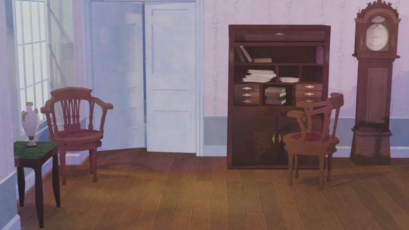
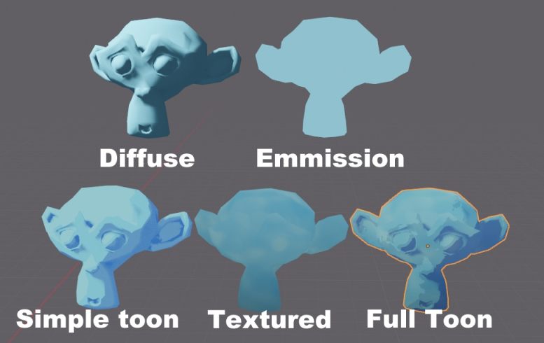
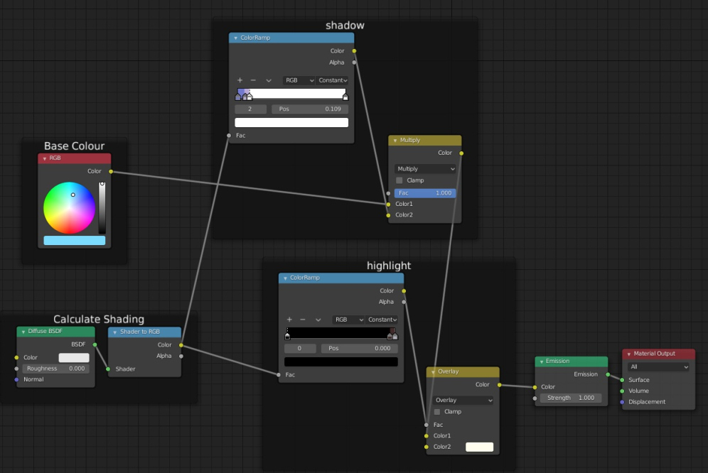
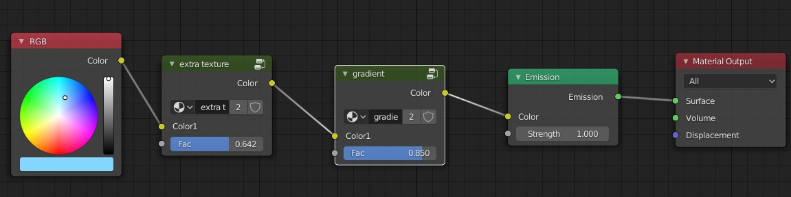
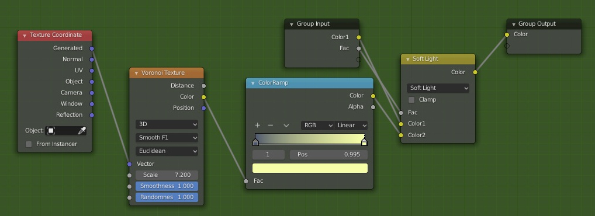
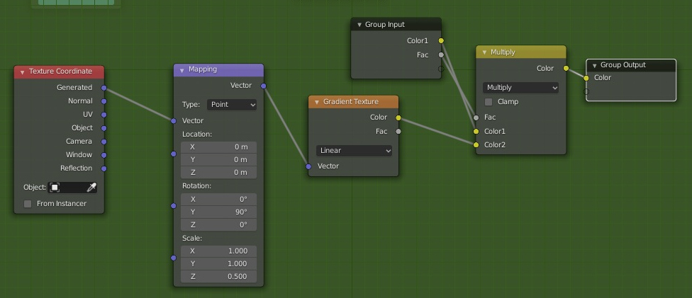
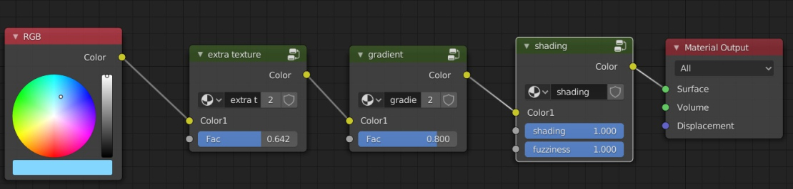
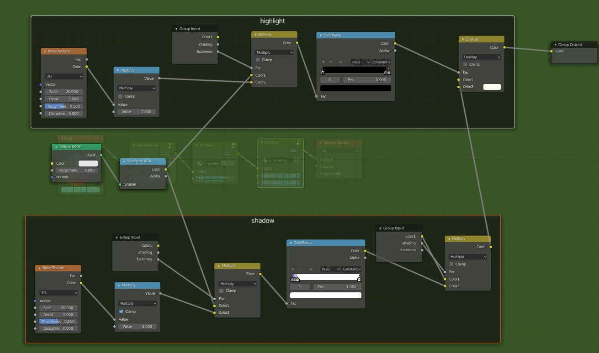
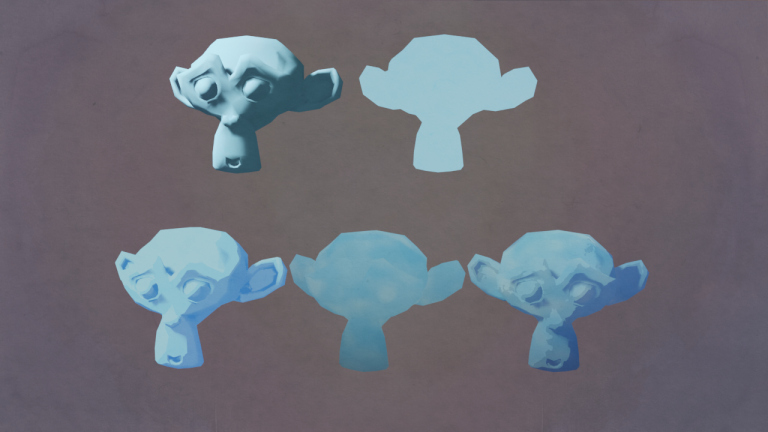
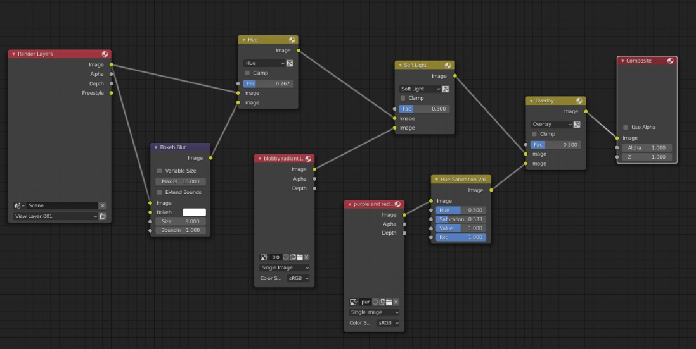

A rough guide to toon shading in Blender
Tags: posts, from dreamwidth, blender, tutorial, art,
I've been really getting into creating non photorealistic rendered backgrounds resembling anime, with flat colours and simple shapes.
Everything I know comes from some really great Youtube tutorials but I haven't seen any broad guides laying out the general approach I personally use. I'm very new to this so I'm sure there's better methods out there, but if nothing else this can help point people towards some good tutorials!
If you're new to Blender, you should start with some more basic introductory tutorials, but there's heaps of those around. Make sure your tutorials are from July 2019 or later, since that's when Blender updated to version 2.8, which changed the user interface and rendering engine.
Here's a general guide to blending modes if you haven't encountered them in digital art.
Youtube Tutorials
These cover a bunch of useful techniques, but I won't assume you've watched them in the later sections of this post.
The main source of my tutorials is Kristof Dedene, his tutorials are clear and not too complicated to follow.
Lightning Boy Studio has some effective but complex techniques that are a mostly bit much for me, but watching the tutorials was certainly very educational!
Here's some specific techniques I use myself:
- Procedural shaders for stylized/anime medieval buildings in blender is a nice introduction to a bunch of useful shader techniques, and a good place to start.
- Ghibli/anime style ocean in Blender
- Ghibli/BoTW Anime Stylized Grass in Blender with EEVEE This is reasonably straightforward and looks great, but doesn't have any shadows.
- Ghibli style procedural rocks in blender A bunch of techniques for shaping and texturing.
- How to Create Ghibli Trees in 3D Conceptually complex modelling technique with very pretty results
Techniques I do not personally use but which may be helpful:
- Stylised animated grass and painting look in Blender This grass has shadows but is hard to edit. Includes a brief example of making fur.
- Daily Blender Tip 254 - Easy outline with the inverted hull method Simple but lacks flexibility.
- Freestyle Basics Using Blender's in-built lines, tends to crash my computer if the model is too complex.
Basic techniques
This will all theoretically make sense without having watched the tutorials above but may be hard to follow. I'm doing static backgrounds with no lines, if you're interested in animation or adding lines this will be less useful. It was too hard to add image descriptions but if you open the images in another tab you can see a larger version.
From what I've seen there are three main approaches:
- Just draw/paint a pre-shaded texture, often onto a flat plane, either procedurally or with images you made in an art program.
- Toon shading: Make a fairly realistic model and calculate the real shading, then simplify that shading into flatter colours.
- Creating a geometrically complex model, then replace the normals with those of a simpler model so that the shading is smoother.
There's a huge variety of ways of doing the first sort of faked shading. Most of Kristof Dedene's tutorials use it. For example, the wood floor in the example render at the top of this post is a flat plane with a wood texture based on the roof texture from the Procedural shaders for stylized/anime medieval buildings in blender tutorial, plus my toon shading as below.
The third technique is a bit fiddly and I've only had good results following How to Create Ghibli Trees in 3D tutorial exactly.
So for now I'll just explain the second technique, toon shading.
Modelling
The modelling techniques are generally the same as those used for any other sort of 3D model. But since the aim is to mimic hand-drawn art, I've found it's good to avoid things looking too neatly geometric. Turn rectangular objects on a slight angle, add slight irregularities to long straight lines, have repeated objects be slightly off center from each other etc.
I steal composition and colouring from regency paintings and Ghibli screenshots.
Using Groups
This is a general Blender organisational technique I use to make my life easier: if I'm going to use the same combination of shader nodes in multiple shaders, I select them all and make a node group. Then I can just add in that group to new shaders without having to recreate it, and if I edit the group it gets changed for every shader that uses it.
But if you don't want to use groups, just recreate the same nodes every time and the effect will be the same.
Toon shading
My default toon shader is based on a diffuse shader, but with the colours flattened out and then piped into to an emission shader. I also add some colour variation and a shadow gradient.
Here's some example light blue shaders applied to the same object under a single light source (a sun): 
The first two are Blender's standard diffuse and emission shaders. Then we have:
- Simple toon shader: flattens the shading of a diffuse shader.
- Texture/colour variation: A subtle shadowy gradient and some colour variation.
- Full toon shader: Combines the colour variation with the toon shading, plus a little fuzziness around the edges.
Simple toon shader
First a toon shader without any bells and whistles.
It starts out with the shading from a white diffuse shader, then uses colour ramps to turn the resulting greyscale gradient into flat colours. These are then multiplied/added to the input colour to create shadows and highlights. I was a bit lazy about this in the example, but optimally the lighting and sliders should be tweaked so that there aren't too many visible highlights or shadows, and most of the object is the unaltered original colour.
The darkest shadows are blue while the medium shadows are purple. I used overlay instead of screen for the highlights because I think that looks prettier, but this means there's no blend factor to tweak. Instead, if you want to make the highlights brighter or more subtle change the brightness in the colour ramp. If you want even more vivid highlights you can pipe the same colour ramp into a screen node as well.
Texture/Colour variation
Next is the colour variation I add: some blobby colours and a slight dark gradient at the base. I wouldn't usually use this as a shader on it's own, though it worked well for candles.
The full shader: 
Extra texture/Colour variation: 
A dark gradient from the bottom of the object:
The amount of each effect is controlled by a factor set as a group input. To add a group input, within a group use Nodes:Input:Group Input, then drag a line from the little dark circle on the right hand side of the Group Input node.
Full Toon Shader
I start with the base colour, then add the the gradient and colour variation from above. I then use a slightly more complex version of the toon shader from the first example.
The "shading" factor here affects how much the shadows show up.
The "fuzziness" factor here adds some noise to make the edges of the highlights and shadows less stark. This look good on some models and not others.
And there you have it, the base toon shader I use for most of my objects! I tweak all the values depending on the material, and sometimes use a glossy shader instead of a diffuse one inside the shading group.
Usually I don't start with a flat colour like in these examples, eg for wood I start with a wood grain created from a waves texture. Also for blocky varnished wood, like the clock in the example, I add extra graininess to the highlights by multiplying the highlight mask by a vertically squished voronoi texture.
Lighting
I'm still figuring out the best approach here.
Usually I have a main sun light facing away from the camera to create a lot of flat well-lit colour, and then a second more intense sun or point light facing towards the camera to create rim highlights and fill in any ugly shadows. I also add little point lights where I want some extra highlights, and point lights with a negative intensity to create extra shadows.
Render settings
I mostly stick to the standard settings.
It's not relevant to this example, but if you have any glowing lights then turning on Bloom adds a nice effect. In theory so does Ambient Occlusion but for some reason it doesn't always show up for me and I can't figure out why /o\
Compositing
Toon shaders are very flat, so a little texture over the top of the render can look nice. I add a blurred version of the render and overlay some low saturation watercolour textures.
Here's my compositer setup:
You could create the same effect in an art program but I like only having to press one button.
Further notes and techniques
Since writing this tutorial I've changed my approach a little, and figured out some more techniques, as described in More On Toon Shading.
I don't bother with the fuzziness and gradient any more, since they're usually more trouble than they're worth. Also, I keep hitting bugs whenever I try to apply compositing to a render with Bloom, so I just do all the post processing in an art program.
Using Freestyle lines doesn't crash my computer any more, I'm not sure if that's because Blender improved or because I got a new computer.